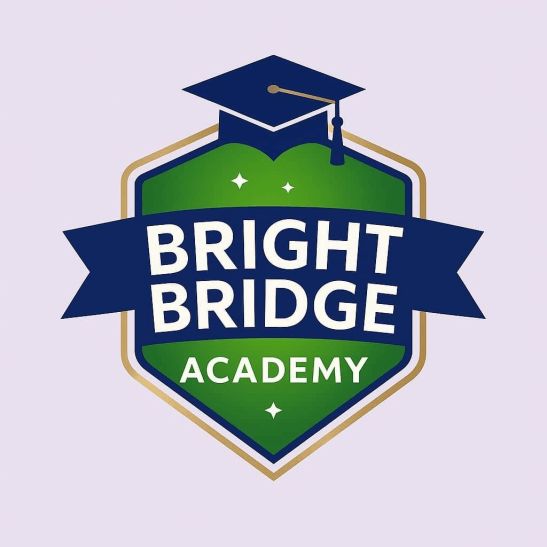

Half Day Adventure
Class: II–III | Duration: 4 Hours
Built for first-timers, families, and active groups looking for lively waves, teamwork, and fun rapids without needing a full day on the water.

Find the right river run for your crew—from splashy half-day rapids to scenic sunset floats and full-day canyon expeditions.
Contact Us to Book or Inquire
Class: II–III | Duration: 4 Hours
Built for first-timers, families, and active groups looking for lively waves, teamwork, and fun rapids without needing a full day on the water.

Class: III–IV | Duration: Full Day (7 Hours)
Our full-day adrenaline trip through towering canyon walls, technical drops, and exciting rapids, complete with riverside rest stops and experienced guides.

Class: I–II | Duration: 3 Hours (Evening)
Enjoy a relaxed late-afternoon float as warm light reflects off the water, offering gentle riffles, calm stretches, and scenic canyon views.
| Trip Name | Difficulty | Duration | Min. Age | Rate |
|---|---|---|---|---|
| Sunset Rapids | Class I–II (Scenic) | 3 Hours | 6+ | $75 |
| Half Day Adventure | Class II–III (Moderate) | 4 Hours | 8+ | $110 |
| Los Dientes Rapid Run | Class III–IV (Thrill) | 5 Hours | 12+ | $145 |
| Canyon Run | Class III–IV (Full Day) | 7 Hours | 14+ | $185 |